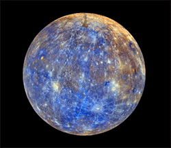
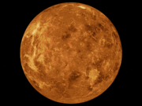
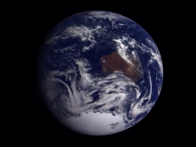
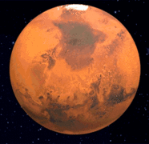

-

Mercurio
foi nomeado em homenagem ao mensageiro dos deuses romanos,
por causa de sua rotação rápida em torno do sol.
Não possui lua
-

Venus
é conhecido como Estrela Dalva
é um dos astros mais
brilhantes no céu noturno. Não possui luas
-

Terra
seu dinamismo proporcionado pela radiação solar,
forças da maré e o calor proveniente do seu núcleo o
tornam um planeta único no Sistema Solar
-

Marte_
o Planeta Vermelho, abriga o maior vulcão do sistema solar, o Olympus Mons.
Possui duas luas
 Jupiter
Jupiter
tem o dia mais curto de todos, levando 10 horas
para girar em torno de seu eixo.
Possui 79 luas
 Saturno
Saturno
além dos seus anéis, também tem 82 luas,
variando desde o tamanho de um campo de futebol
ao tamanho do planeta Mercúrio.
 Urano_
Urano_
foi o primeiro planeta a ser descoberto usando um telescópio.
É composto de elementos mais pesados que seus vizinhos gasosos,
Possui 27 luas.
 Neturno
Neturno
está tão longe do sol que leva 4 horas para
a luz do sol chegar ao planeta.
Possui 14 luas.